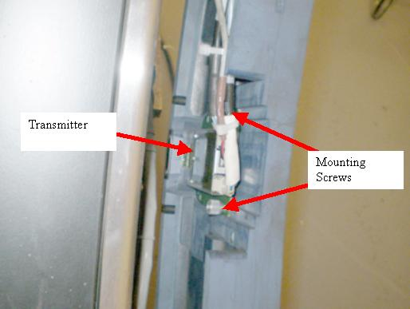

Operating Documentation
Direction 5193574-800, Rev# 22
LightSpeed 7.X Service Methods
Module Version 2.0, Version Date 4/21/09
Operating Documentation |
| Required Persons | Preliminary Reqs | Procedure | Finalization |
|---|---|---|---|
| 1 | Not Applicable | 60 mins | Not Applicable |
This procedure defines the necessary steps to replace the slip ring transmitter assembly.
| Last Revised: | February 2, 2009 |
| Item | Qty | Effectivity | Part# | Manufacturer | |
|---|---|---|---|---|---|
| FE Toolkit | 1 | - | - | - | |
| Item | Qty | Effectivity | Part# | Manufacturer |
|---|---|---|---|---|
| Hand Towels, for clean-up | AR | - | - | - |
| Item | Qty | Effectivity | Part# | Manufacturer | |
|---|---|---|---|---|---|
| Dual Channel Transmitter Assembly | 1 | - | 5120815 | - | |
| ||||
| Potential for shock. | ||||
| Voltage may be present. Potential for injury if covers removed and power is left ON. | ||||
| Always remove the right side cover first, and turn OFF power at the service switches. |
| ||||
| Follow ALL required safety and PPE procedures customary for your organization, when working on this product. | ||||
| Condition | Reference | Effectivity |
|---|---|---|
Only trained service personnel should service the GE CT Scanner. | - | - |
| ||||
| Potential for shock. | ||||
| Voltage may be present. Potential for injury if covers removed and power is left ON. | ||||
| Always remove the right side cover first, and turn OFF power at the service switches. |
Remove the gantry right side cover.
Refer to Parts Replacement → Gantry → Enclosure → (Cover Removal Procedure).
Turn OFF the HVDC and Axial Drive on the Service Switch Panel (SSP) and rotate the detector to the 6 o'clock position.
Turn OFF the 120VAC service switch on the Service Switch Panel (SSP).
Remove the gantry left side, top and rear covers.
Rotate the gantry by hand as necessary for an easy working position for the slip ring transmitter module.
The Transmitter is on the back side of the slip ring in line with the Detector so it will currently be down around the 6 o'clock position.
Illustration 1: Slip ring Transmitter

| ||||
| Be careful to not contaminate the slip ring antenna or signal tracks. | ||||
Remove the power and fiber optic cables from the transmitter.
Loosen the two captive thumb screws holding the transmitter to the slip ring.
Pull the transmitter away from the RF antenna along the back surface of the slip ring to disengage the transmitter from the antenna coupler.
Slide the new transmitter along the back surface of the slip ring into the RF coupler and tighten the two transmitter thumb screws.
Plug in the power and fiber cables.
Turn ON the 120VAC, HVDC and Axial Drive service switches and enable Table drives.
Perform a [System Scanning Test] from the [Functional Checks] menu of the service manual to ensure proper data transmission.
Check the RTS Dip stats for the scans just run and make sure there are no errors shown. If errors are shown, recheck connections.
Turn off the Axial Drive, HVDC, and 120VAC service switches.
Install the gantry rear cover, top covers and left side cover.
Refer to Replacement → Gantry → Enclosure → (Cover Removal Procedures).
Turn on the 120VAC, HVDC and Axial drive service switches and enable Table drives.
Install the gantry right side cover.
No further finalization required since checks have already been done above.